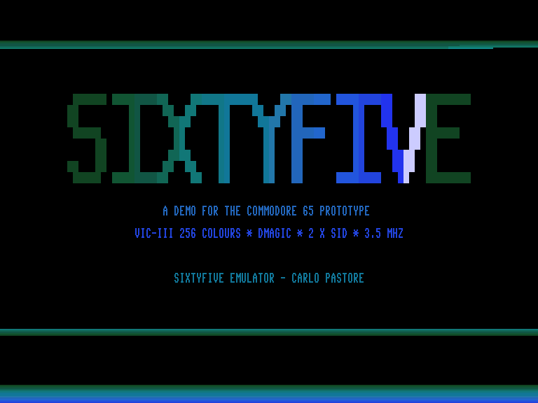
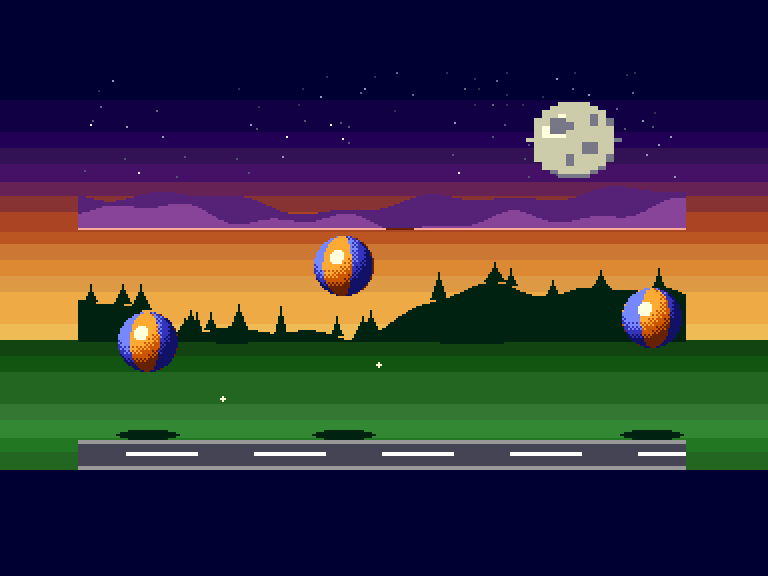
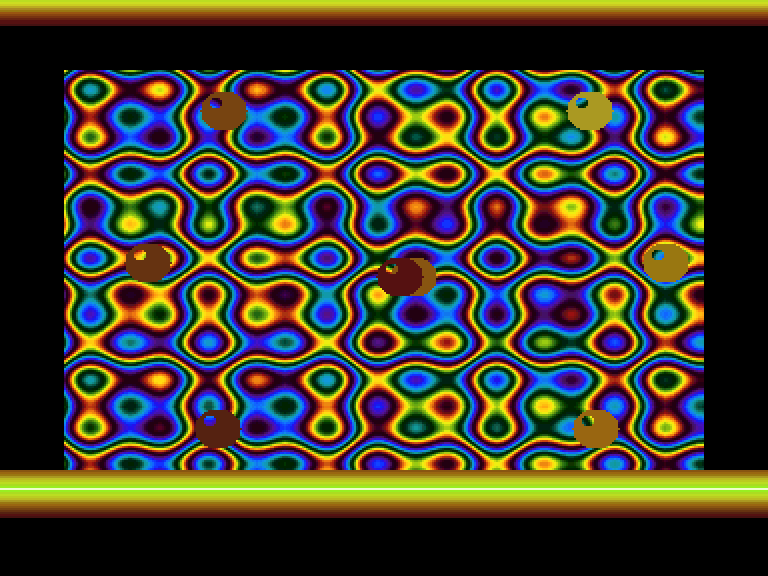
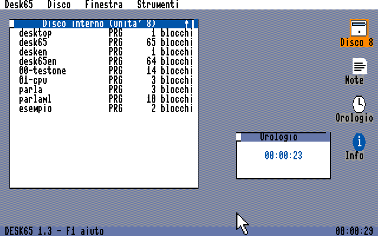
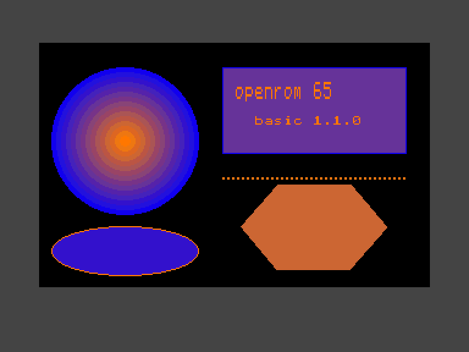
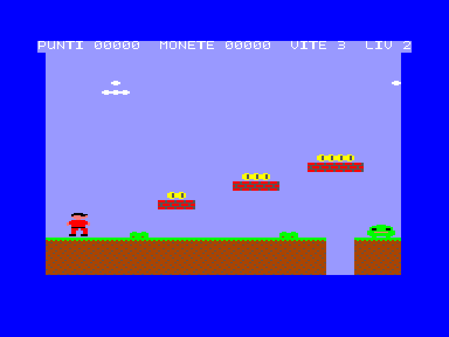

15/10/2026
SIXTYFIVE STUDIO 1.2
L'editor di livelli, le mappe di Tiled e il caricamento dal disco durante il gioco.
Leggi →EMULATORE DEL COMMODORE 65 PER WINDOWS
SixtyFive riproduce il prototipo del 1991: VIC-III, due SID, DMAgic, drive F011. Il comportamento è confrontato con un C65 rev 2B funzionante.
READY.

Programmi di collaudo scritti apposta, eseguiti su un C65 rev 2B: le differenze trovate diventano correzioni.
Legge e scrive i floppy da 3,5" con il WAFFLE, oltre alle immagini .d81 e alla SD2IEC.
Una ROM aperta scritta da zero: BASIC con grafica, suono, sprite e SAY. Nessun byte Commodore.
Giochi in assembly 4510: editor, foto a 64 colori, voci campionate, editor di livelli.





Come si fa a sapere che un emulatore è fedele a una macchina mai prodotta? Si scrive un programma di prova, lo si esegue sul C65 vero, si fotografa lo schermo e si confronta.
Ogni differenza diventa una correzione, annotata nel diario.
Le ROM Commodore non sono incluse: chi le possiede le copia nella cartella dell'emulatore.
| PROGRAMMA | TIPO | STATO |
|---|---|---|
| ROM 911001 (la tua copia) | sistema | funziona |
| OpenROM 65 e DESK65 | sistema | funziona |
| ORBIT | demo | funziona |
| PIATTAFORME, FOTOEVOCE | giochi dello Studio | funziona |
| [ALTRI PROGRAMMI PROVATI] | [TIPO] | [STATO] |
15/10/2026
L'editor di livelli, le mappe di Tiled e il caricamento dal disco durante il gioco.
Leggi →14/10/2026
Il BASIC della ROM aperta ha grafica, suono e sprite, provato sul C65 vero.
Leggi →[DATA]
[DUE RIGHE DI RIASSUNTO]
PROSSIMAMENTE
La CPU del C65, dall'emulatore a una scheda che entra nello zoccolo della macchina vera. Il lavoro comincia dalle misure sul bus.